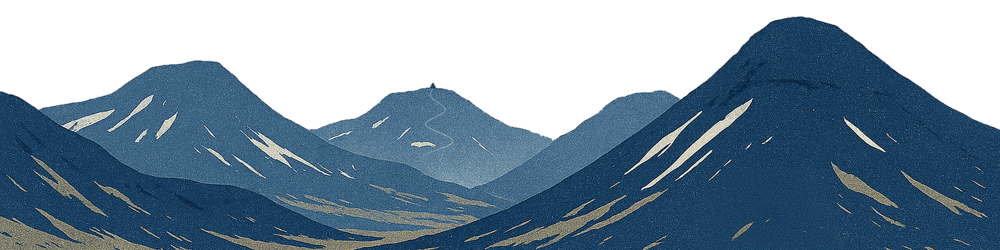

English summary of a task force report on the Icelandic government's approach to AI
AI for Good
Iceland as a model society for using AI for good
Hjálmar GíslasonAnna Kristín TumadóttirAri Kristinn JónssonHalldór Fannar GuðjónssonLilja Dögg Jónsdóttir
